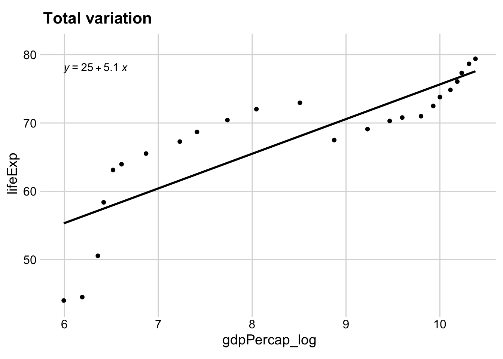
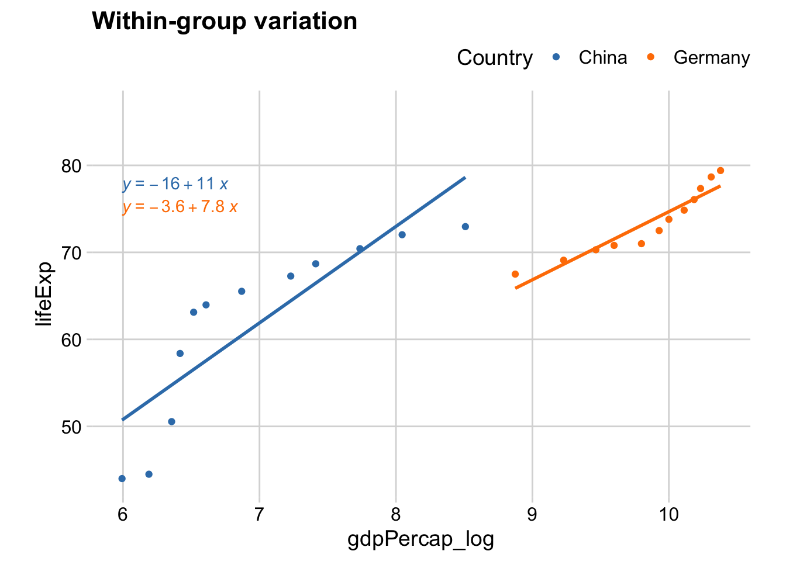
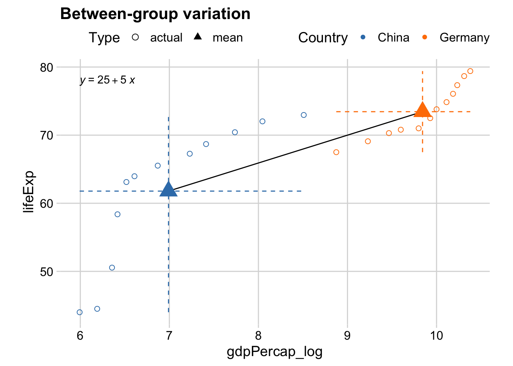
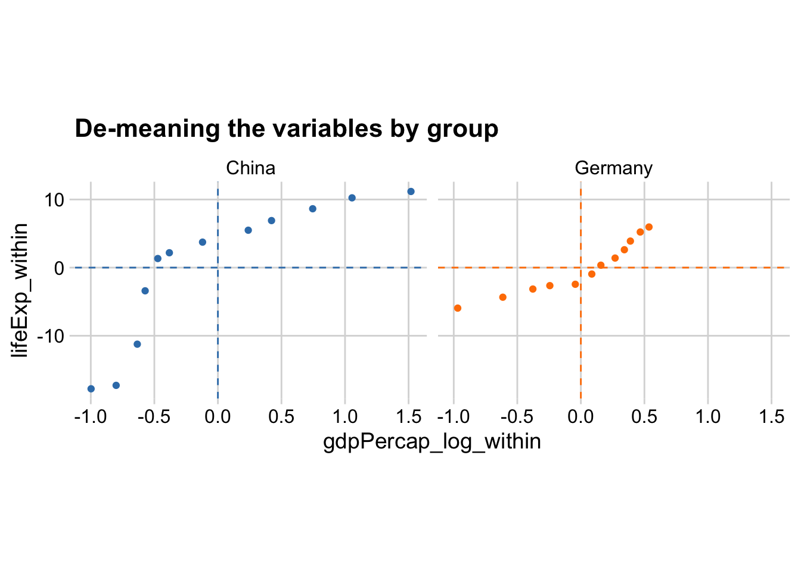
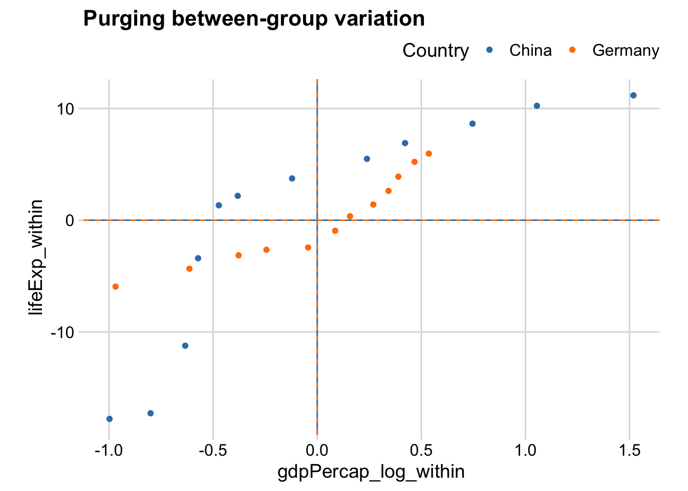
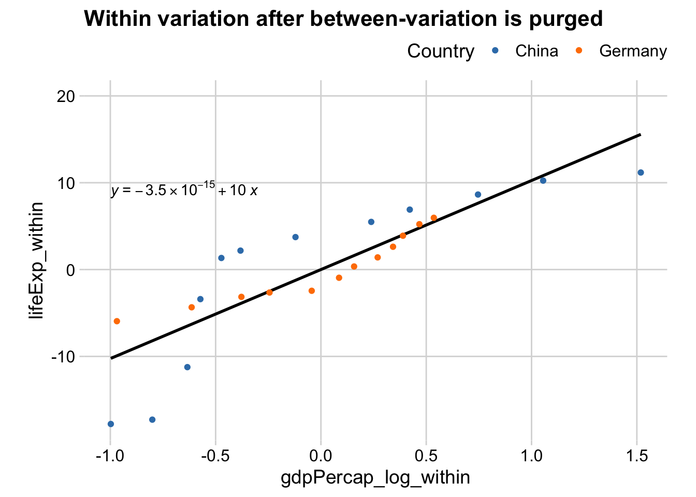
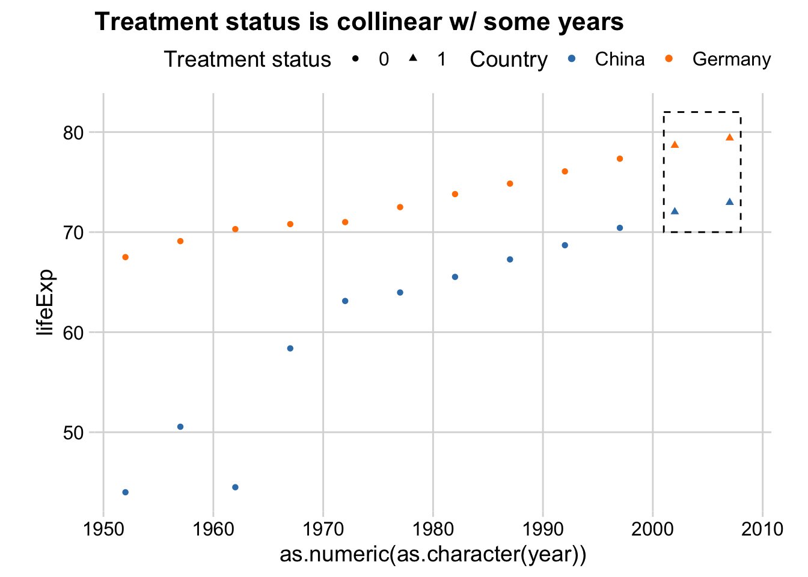

gc <- gapminder %>%
filter(country %in% c("Germany", "China")) %>%
mutate(gdpPercap_log = log(gdpPercap))What are fixed effects, exactly?
Pooling time-series data from two countries
Let’s say we want to quantify the relationship between life expectancy as outcome, and GDP per capita (logged) as predictor. Let’s focus on two countries – Germany and China – across time.
Let’s pretend that we forget about the group structure – we treat all data points as if they come from one place. Let’s visualize the relationship between the two variables from the pooled data:

This is equivalent to running a naive regression pooling all data:
m1 <- lm(lifeExp ~ gdpPercap_log, data = gc)| Pooled data | |
|---|---|
| (Intercept) | 24.867 |
| (6.030) | |
| gdpPercap_log | 5.079 |
| (0.705) | |
| Num.Obs. | 24 |
| R2 | 0.703 |
Within-group variation
It is useful to think about where the variation comes from. The total variation can be broken down into two groups: (1) within-group variation, and (2) between-group variation.
For within-group variation, it is just like fitting a regression line for each country separately – each country having its own intercept and slope. Let’s visualize the within-group variation:

This is equivalent to running two separate regressions on China and Germany data respectively:
cdata <- gc %>% filter(country == "China")
gdata <- gc %>% filter(country == "Germany")
m2 <- lm(lifeExp ~ gdpPercap_log, data = cdata)
m3 <- lm(lifeExp ~ gdpPercap_log, data = gdata)| China data | Germany data | |
|---|---|---|
| (Intercept) | −15.728 | −3.582 |
| (14.593) | (8.551) | |
| gdpPercap_log | 11.089 | 7.826 |
| (2.075) | (0.868) | |
| Num.Obs. | 12 | 12 |
| R2 | 0.741 | 0.890 |
Between-group variation
For between-group variation, we first compute the group-specific means for the two variable. Then we can draw a line between the two mean points:
gc_mean <-
gc %>%
group_by(country) %>%
summarize(
ymin = min(lifeExp), ymax = max(lifeExp),
xmin = min(gdpPercap_log), xmax = max(gdpPercap_log),
gdpPercap_log = mean(gdpPercap_log),
lifeExp = mean(lifeExp)
) %>%
mutate(type = "mean")
gc_wMean <- gc %>%
mutate(type = "actual") %>%
bind_rows(gc_mean)
We can then purge the between-group variation by re-orienting the country observations to its own origin – that is, subtracting the group mean from y-variable and x-variable:
gc_within <- gc %>%
group_by(country) %>%
mutate(
gdpPercap_log_within = gdpPercap_log - mean(gdpPercap_log),
lifeExp_within = lifeExp - mean(lifeExp),
xmean = mean(gdpPercap_log_within),
ymean = mean(lifeExp_within)
) 
Let’s superimpose the two:

We get rid of any between-group difference. What are left are the within-group variations within the specific groups.
If we fit a single regression line on the data as a whole after the between-variation is purged:

This is equivalent to running a regression model using the within-variation of x-variable and y-variable. This is further equivalent to running a regression with country-specific intercepts. To see this:
m4 <- lm(lifeExp_within ~ gdpPercap_log_within, data = gc_within)
m5 <- lm(lifeExp ~ gdpPercap_log + country, data = gc)| Within variations | Country dummy | |
|---|---|---|
| (Intercept) | 0.000 | −9.882 |
| (0.799) | (9.224) | |
| gdpPercap_log_within | 10.252 | |
| (1.279) | ||
| gdpPercap_log | 10.252 | |
| (1.309) | ||
| countryGermany | −17.586 | |
| (4.077) | ||
| Num.Obs. | 24 | 24 |
| R2 | 0.745 | 0.842 |
This is what fixed effect is doing – purging between-group variation and using only within-group variation. In other words, let us get rid of the systematic difference between China and Germany, and look at their within-variation together.
It is also equivalent to saying: “When the value of the Germany dummy is held constant (i.e., looking at just Germany, or China), what is the relationship between life expectancy and GDP per capita?” This phrasing of fixed effects forces us to think about whether the inclusion of such effects make sense.
When will fixed effects fail?
Let’s have a hypothetical treatment where all countries received treatment after the year of 1997. And suppose we run a two-way fixed effects model, controlling for year and country fixed effects, while attempting to estimate the treatment effects:
gc_wTreat <- gc %>%
mutate(treat = as.numeric(year > 1997)) %>%
mutate(year = factor(year))
m6 <- lm(lifeExp ~ treat + country + year, data = gc_wTreat)| ''Treatment effects'' w/ TWFE | |
|---|---|
| (Intercept) | 49.920 |
| (3.625) | |
| treat | 20.433 |
| (4.925) | |
| Num.Obs. | 24 |
| R2 | 0.875 |
It seems like the treatment is positive and highly statistically significant!
But if you look at the underlying estimated coefficients, the fixed effect for year 2007 has actually not estimated (i.e., NA):
tidy(m6)# A tibble: 14 × 5
term estimate std.error statistic p.value
<chr> <dbl> <dbl> <dbl> <dbl>
1 (Intercept) 49.9 3.62 13.8 0.0000000279
2 treat 20.4 4.92 4.15 0.00162
3 countryGermany 11.7 2.01 5.80 0.000119
4 year1957 4.07 4.92 0.827 0.426
5 year1962 1.65 4.92 0.335 0.744
6 year1967 8.84 4.92 1.80 0.100
7 year1972 11.3 4.92 2.30 0.0423
8 year1977 12.5 4.92 2.53 0.0277
9 year1982 13.9 4.92 2.82 0.0165
10 year1987 15.3 4.92 3.11 0.00995
11 year1992 16.6 4.92 3.38 0.00618
12 year1997 18.1 4.92 3.68 0.00361
13 year2002 -0.835 4.92 -0.169 0.869
14 year2007 NA NA NA NA The estimated coefficient for the treatment is actually that for year 2007, if the treatment variable is dropped. To see this:
m7 <- lm(lifeExp ~ country + year, data = gc_wTreat)
tidy(m7) %>% filter(term == "year2007")# A tibble: 1 × 5
term estimate std.error statistic p.value
<chr> <dbl> <dbl> <dbl> <dbl>
1 year2007 20.4 4.92 4.15 0.00162Which is equivalent to the treatment effect in the previous model
tidy(m6) %>% filter(term == "treat")# A tibble: 1 × 5
term estimate std.error statistic p.value
<chr> <dbl> <dbl> <dbl> <dbl>
1 treat 20.4 4.92 4.15 0.00162Why is it the case? This is because the treatment variable is collinear with some year dummies. Because we define the treatment such that it has value of 1 if year is greater than 1997. In other words, after 1997, all treatment status is 1 for all observations.
Adding a year fixed effect is equivalent to asking: Holding a particular year constant, say 2002, what is the difference between the treated and non-treated observations in their outcomes? You can’t answer that question because there is no variation in treatment status after 1997!

The illusion of having an estimable treatment effect is simply an artifact that R wants to avoid the problem of collinearity and drops one of the year fixed effect (year 2007 in this case). It prioritizes the treatment variable simply because in the model specification the treat term is put in front of the year term.
To show this, revert the order of treat and year:
m8 <- lm(lifeExp ~ country + year + treat, data = gc_wTreat)
tidy(m8) %>% filter(term == "treat")# A tibble: 1 × 5
term estimate std.error statistic p.value
<chr> <dbl> <dbl> <dbl> <dbl>
1 treat NA NA NA NAIn this case, the treatment effect cannot be estimated. This shows the pitfall of blindly relying on R when you estimate models with a lot of fixed effects. Also, if simply changing the order of the terms gives you different results, you’re probably in trouble which is not safe to ignore.
A better to avoid this problem is using alternative packages, like fixest, that give better warning:
twfe_m1 <- feols(lifeExp ~ treat + gdpPercap_log | country + year,
data = gc_wTreat)The variable 'treat' has been removed because of collinearity (see $collin.var).The above warning and the action to drop the collinear variable is much more sensible to prevent researchers from drawing wrong conclusion.